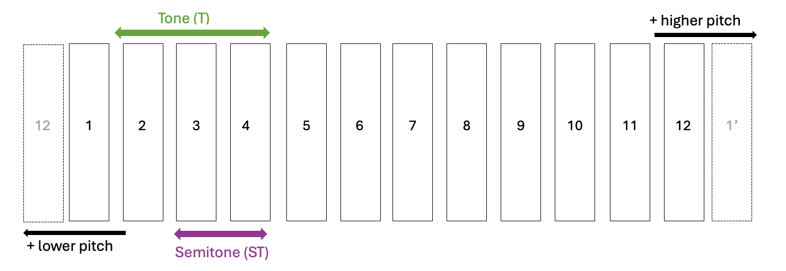

The twelve notes
Nowadays, Western music uses twelve different sounds to compose music. We will number them from 1 to 12.

Once we reach note 12, the notes repeat again but sounding higher. In the same way, if we go below note 1, the notes sound lower. The smallest distance between two sounds is called a semitone (ST). The distance of two semitones is called a tone (T). None of these twelve notes is more important than the others. However, when we compose a song, we do not usually use all twelve notes. Instead, we make a selection. That selection is called a scale.